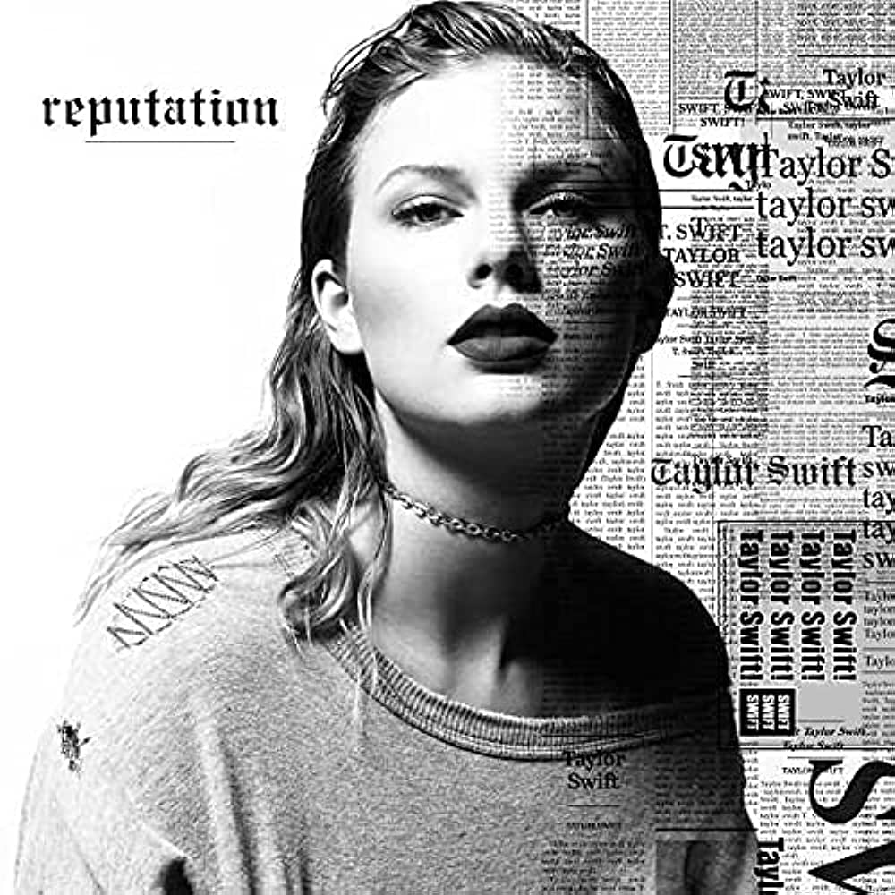

Two years after her debut album was released, Taylor came out with her second album, "Fearless". Shortly after, she released her third album, "Speak Now". Then, 2 years later, she released "Red". Taylor Swift was truly on top of the world. She was admired by a variety of people and was later called "the music industry". But, after her release of her fifth studio album "1989" in 2014, things began to go downhill. As you may recall, Kanye West took the excitement out of Taylor's 2009 MTV VMA win and told the crowd that Beyonce deserved the award. This started contreversy between the two singers which later lead to Kanye releasing a song called "Famous". In the song, Kanye attacked her and said he made Taylor famous. The song made many of Taylor's fans and people in general to turn against her, which made her physically dissappear for a year. But she was still working on a new record called "reputation". "reputation" was Taylor's comeback where she was insinuating leaving her old self behind and finding her best self. Her song "Look What You Made Me Do" was very well recieved amongst many. Taylor then went on her "reputation Stadium Tour". Critics said she would be singing to empty stadiums, but every show was sold out. Taylor has regained her status by doing what she loves most, songwriting.
